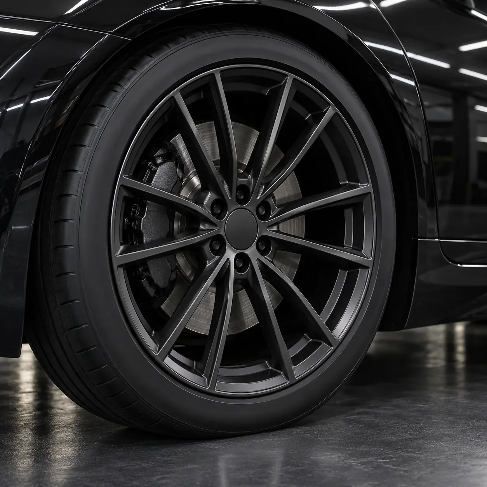

예시 이미지
이럴 때 맡겨요
- 01
연석에 휠 테두리가 긁혔을 때
- 02
휠 도색이 군데군데 벗겨졌을 때
- 03
휠 색을 바꾸고 싶을 때
- 04
사고 뒤 휠에 상처가 남았을 때
작업 순서
- 01
분리 · 확인
휠과 타이어를 분리해 눈에 잘 띄지 않던 잔기스까지 살펴요.
- 02
샌딩 · 박리
미세한 기스까지 갈아 내고 기존 도장을 벗겨요.
- 03
세척
새 색이 고르게 입혀지도록 깨끗이 씻어요.
- 04
분체도장 · 굽기
도료를 입히고 알맞은 온도에서 충분히 구워요.
- 05
조립 · 장착
타이어를 다시 끼우고 차에 장착해요.

예시 이미지
김프로 시공 기록
블로그에서 더 보기 ↗알아 두면 좋아요
분체도장은 무엇이 다른가요?
가루 도료를 입히고 높은 온도에서 구워 굳히는 방식이에요. 액상도장보다 시간과 손이 더 들어가고, 굽는 장비가 있어야 해요.
색을 바꿀 수 있나요?
네, 원하는 색을 상담하며 정해요.
다이아몬드 컷팅휠도 같은 방식인가요?
면을 깎아 광을 내는 컷팅휠은 따로 작업해요. 다이아몬드 컷팅휠 쪽을 봐 주세요.